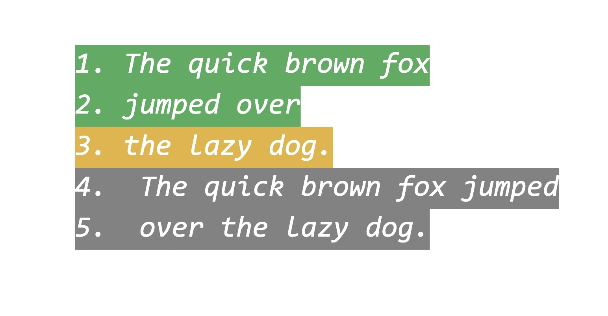
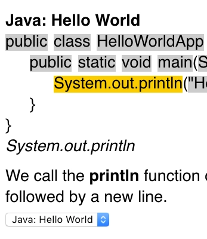
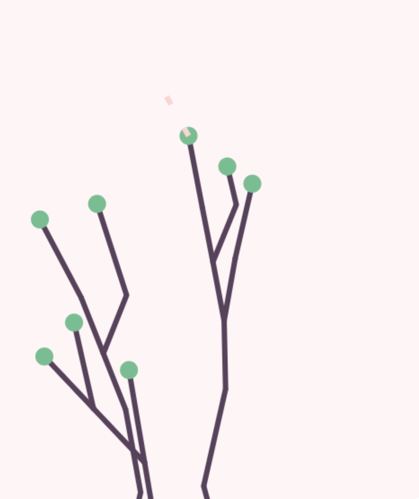

Angus Findlay
Fullstack Engineer based in London!

Vimle
Wordle for vim fans.
18th Mar 2022
Intro to Elm for React Developers
How Elm takes a novel approach to creating frontend applications, and what React developers can learn from it. Originally written for the Theodo Blog, published in the React Newsletter.
25th Oct 2021

Visualise Java Projects in Visual Studio Code
A Visual Studio code extension to make large Java codebases more accessible.
6th Dec 2020

Code Genius
A Rap Genius inspired website for people learning to code.
9th Sep 2020
Learn Chinese & Japanese Characters
A tiny quiz web app for Hanzi/Kanji, written in Elm.
27th Jul 2020
HyperGlitch
Some small programs for intentional aesthetic image-glitching, written in Haskell & Elm.
9th Dec 2019

Functional Plants
Experimenting with functional programming & data structures to create live animations of plant growth.
25th Jun 2019

Songscore
A music reviewing platform, built with Elm & Elixir.
16th Jul 2017